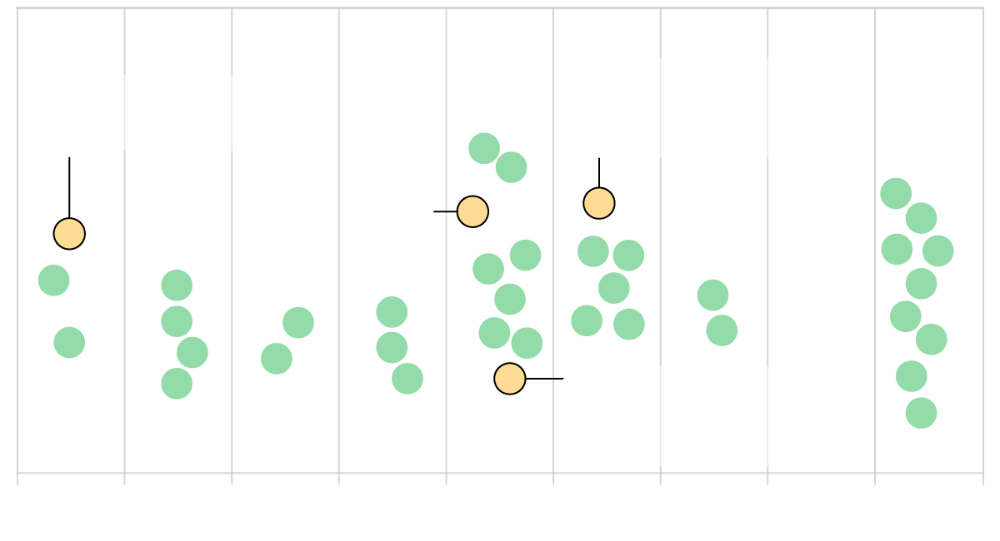
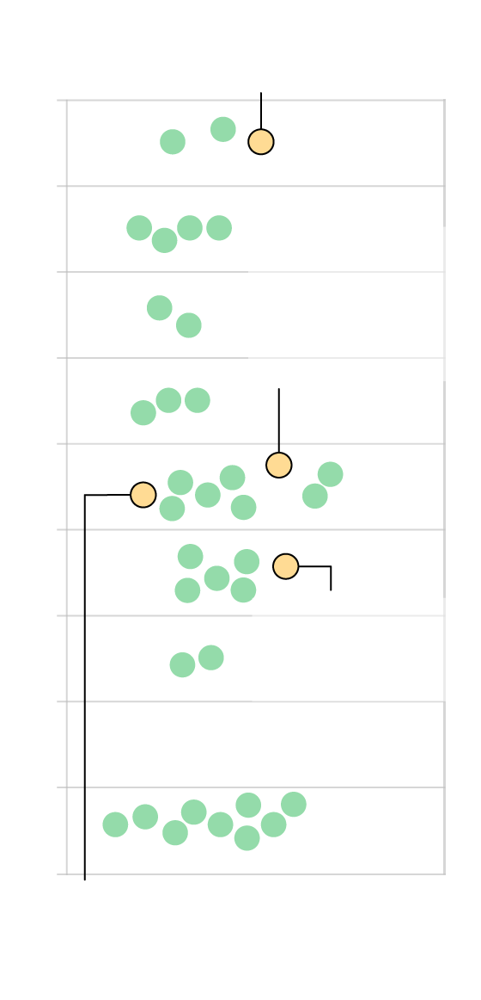
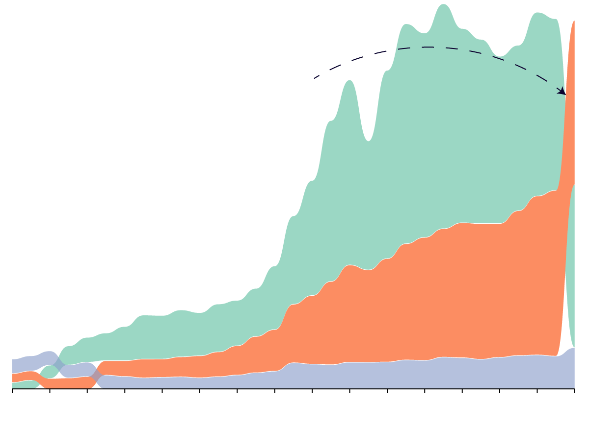
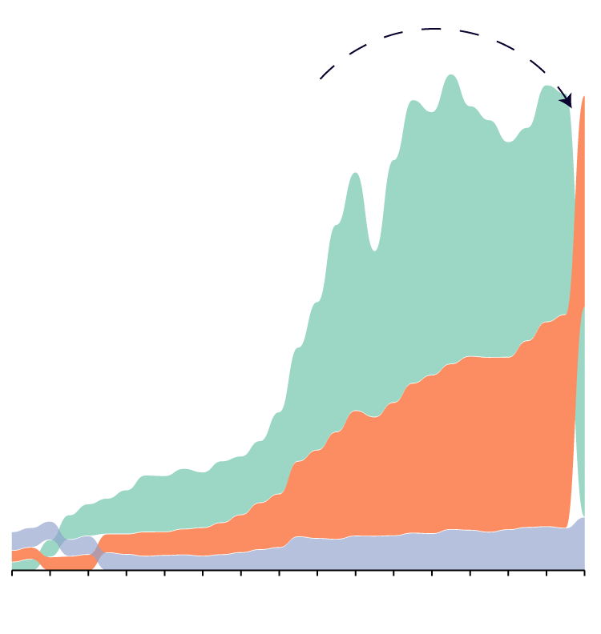

Hello! I am a data reporter at Mission Local, an independent
news outlet focused on enterprise reporting, in San Francisco's Mission District.
I am a graduate of McGill University and Columbia Journalism School, where I completed a
Master's in Data Journalism. Before coming to
journalism, I worked at a remote sensing company, analyzing measurements of methane using satellite
technology.
I love anything involving data analysis or mapping, and am excited to use those tools
to find and tell news stories. In my free time, I also like to take photos.
The Élysée Palace publishes a daily agenda of what Emmanuel Macron is doing
every day. I used BeatuifulSoup to scrape it, to gather data on his activities for each day between May
2017
and April 2023. I used Python, pandas and regular expressions to analyze the dataset and see who he
meets
and which topics occur the most frequently.
I used Playwright and BeautifulSoup to scrape daft.ie, a popular property
listing site in Ireland. I gathered house prices across Dublin, geocoded the address using the Google
Maps
API and aggregated the data to display using Mapbox GL JS.
I used Playwright to interact with dropdown menus on Immigration
Canada's website, to BeautifulSoup to scrape estimated processing times for different economic visa
categories. Using Bokeh, I build the framework for a dashboard that can auto update. I am working to
get the automated part working, and expand the scraper to include other visa categories.
A handful of graphics I have made for different stories:
San Francisco hasn't seen its last new dispensary yet
While the city placed a moratorium on new permits in June, many applications
submitted prior are still in the pipeline.
Source: San Francisco Office of Cannabis, via records
request. Data geocoded using the Google Maps API, map created using Mapbox. Published in Mission
Local.
Born Abroad
The US is home to over 44 million people born outside the country.
Foreign born population, as a percentage of total.
At over 26%, California
has the largest percentage
of foreign born residents
of any state.
0
54
West Virginia has the smallest share of foreign
born residents, 1.6% of the total population.
Miami-Dade County has
more foreign born residents
than any other county, over
53% of the total population.
Foreign born population, as a percentage of total.
54
0
At over 26%, California
has the largest percentage
of foreign born residents
of any state.
West Virginia has the smallest share of foreign
born residents, 1.6% of the total population.
Miami-Dade County has
more foreign born residents
than any other county, over
53% of the total population.
Source: American Community Survey, 2018. Created using QGIS,
Adobe
Illustrator and ai2html.
This year, police commissioners have been on at least 34 votes
and on four

June 7: The commission voted 5-2 to rescind two policies it
said SFPD had created illegally.
Jan. 11: The police commission voted 4-2 to approve DGO 9.07,
which curtails pretext stops.
May 3: The police commission voted 5-1 to approve DGO 2.03.,
which outlines a policy around drug use by police officers.
May 17: The commission voted 3-3 on whether to rescind two
policies it said SFPD had created illegally. This move failed.
Jan
March
Feb
April
May
June
July
Aug
Sept
Oct

Jan. 11: The police commission voted 4-2 to approve DGO 9.07,
which curtails pretext stops.
Jan
Feb
May 3: The police commission voted 5-1 to approve DGO 2.03.,
which outlines a policy around drug use by police officers.
March
April
May
June
June 7: The commission voted 5-2 to rescind two policies it
said SFPD had created illegally.
July
Aug
Sept
Oct
May 17: The commission voted 3-3 on whether to rescind two
policies it said SFPD had created illegally. This move failed.
Source: minutes from Police Commission meetings.
Created using Flourish, Adobe Illustrator and ai2html. Published in Mission
Local.
Capp St
S Van Ness Ave
1:45 a.m.: Officers responded after 5 pedestrians were
struck
by a
vehicle.
MISSION
DISTRICT
19th St.
1:57 a.m.: Officers responded to another collision,
this
time
between two
vehicles. One of the drivers was allegedly responsible for the previous incident.
Mission St
MISSION
DISTRICT
Capp St
S Van Ness Ave
1:45 a.m.: Officers responded after 5 pedestrians were
struck
by a
vehicle.
19th St.
1:57 a.m.: Officers responded to another collision,
this
time
between two
vehicles. One of the drivers was allegedly responsible for the previous incident.
Mission St
Created using first-hand reporting with Adobe Illustrator,
Mapbox and ai2html. Published in Mission
Local.
are a vital mechanism of
development in low and middle income countries

Remittances surpassed FDI during the pandemic.
Foreign
Direct
Investment
Remittances
Foreign Aid
1990
2000
2010
2020

Remittances surpassed
FDI during the pandemic.
Foreign
Direct
Investment
Remittances
Foreign Aid
2020
2010
2000
1990
Source: World Bank. Created using Rawgraphs, Adobe Illustrator and
ai2html.
Kindergartners at lower-income schools have
more cavities
= percentage with cavities
= percentage without cavities
23%
17%
39%
44%
High-income
Middle-high income
Middle-low income
Low-income
Kindergartners at lower-income
schools have more cavities
= percentage with cavities
= percentage without cavities
23%
17%
High-income
Middle-high income
39%
44%
Middle-low income
Low-income
Source: San Francisco Department of Public Health, for the
2017-18 academic year. Created using Adobe Illustrator and ai2html. Published in Mission
Local.
A story on single-use plastics: a point of contention
between ultra-Orthodox and secular jews in Israel. Reported and written over a 10 day reporting trip to
Israel and the Palestinian Territories, thanks to funding from the Scripps Howard Foundation.
Autonomous vehicles, which never speed, drive while intoxicated, or
text-and-drive, have the potential to make vehicle transportation safer and more accessible. But seven
experts say this high-tech solution to San Francisco’s transportation problems brings what transit-first
cities are trying to avoid: More cars on the road.
A data-driven story on how the cannabis industry - which fared well during
the pandemic - now faces a problem: There are simply too many shops chasing too few customers.
About Paula Tejeda, an entrepreneur who has long made sharing Chilean food
and culture her business. Even on the 50th anniversary of Pinochet's coup - a somber date for most
Chileans - Tejeda sought to gather and share the warmth of her culture.